Guillaume Got
Accueil
A propos
Projets
Contacter
Accueil
A propos
Projets
Contacter
Compétences
Gérer le patrimoine Informatique
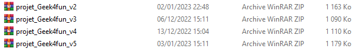
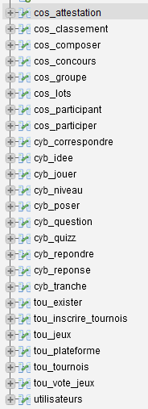
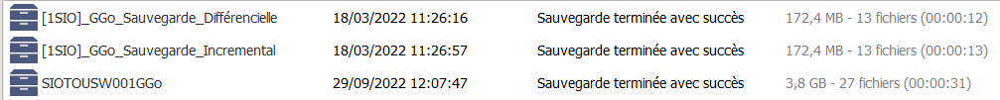
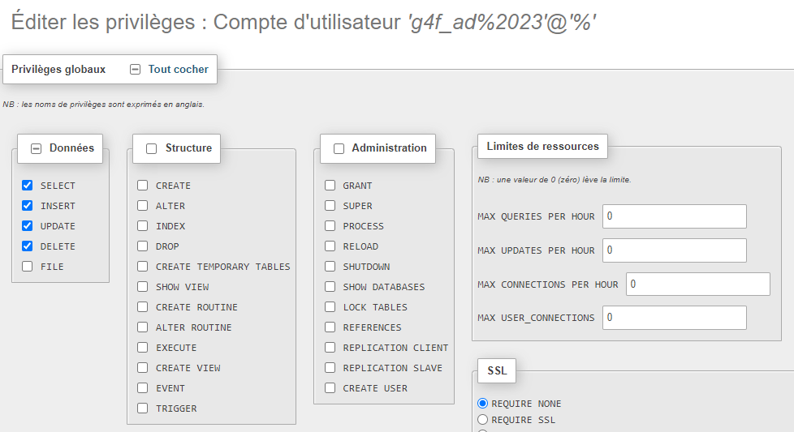
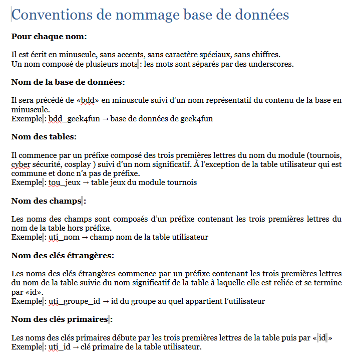
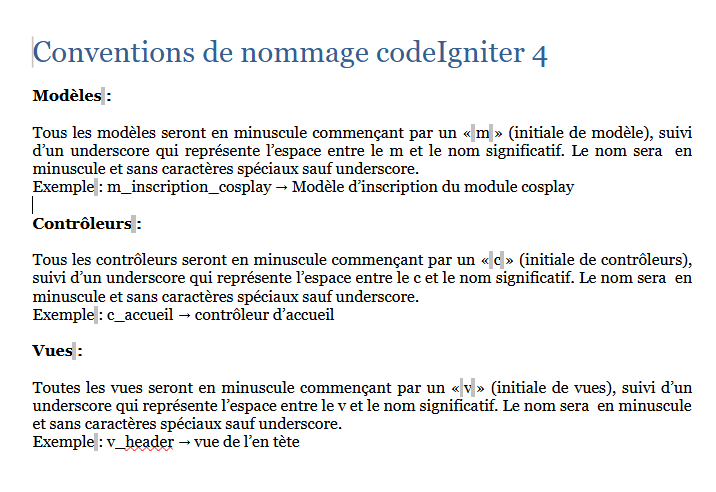
Répondre aux incidents et aux demandes d'assistance et d'évolution
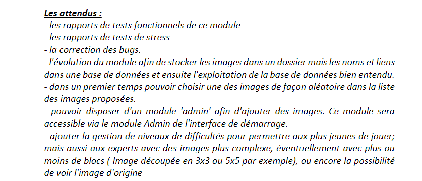
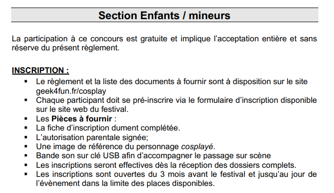
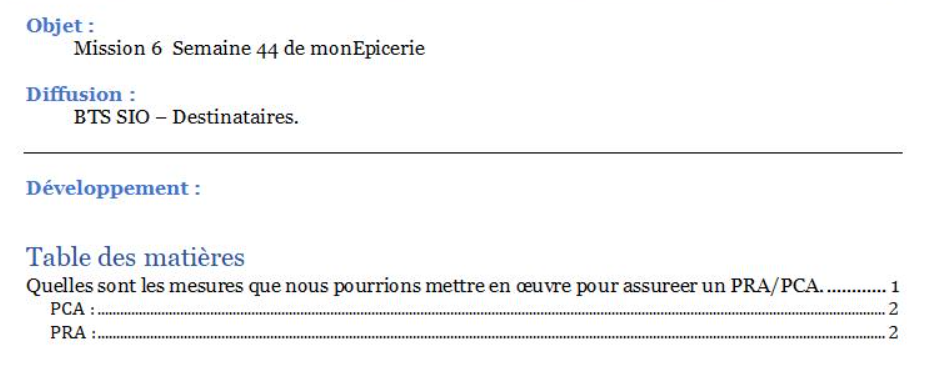
Développer la présence en ligne de l'organisation
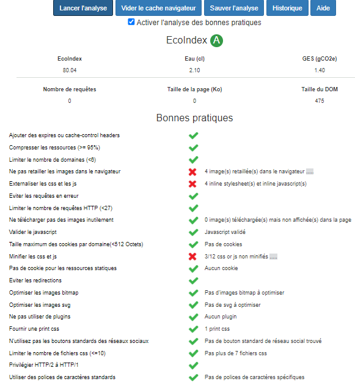
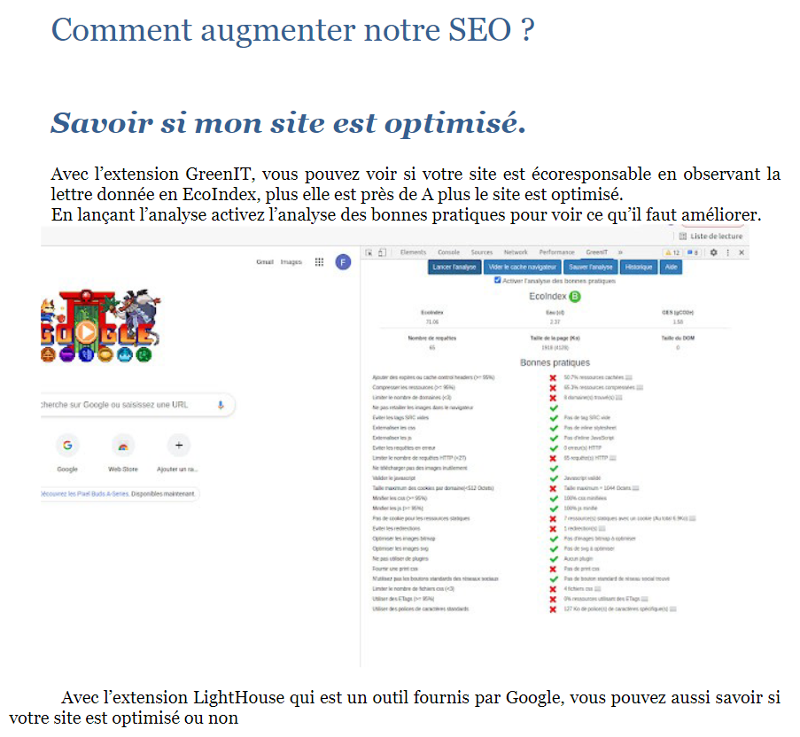
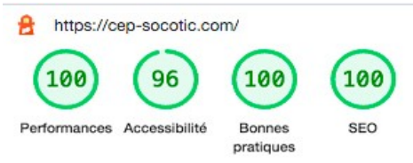
Travailler en mode projet
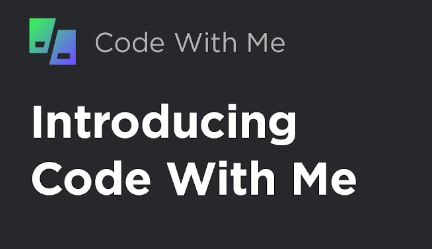
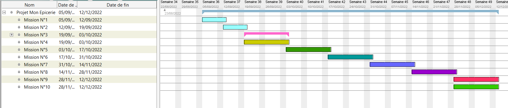
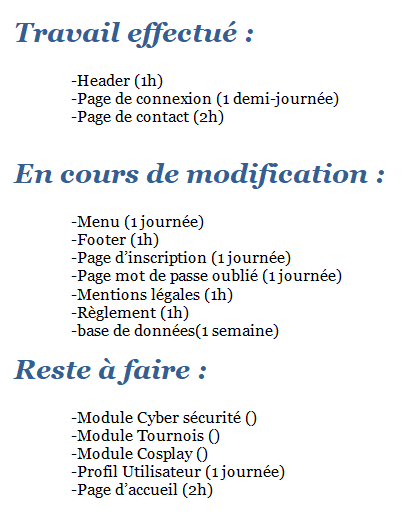
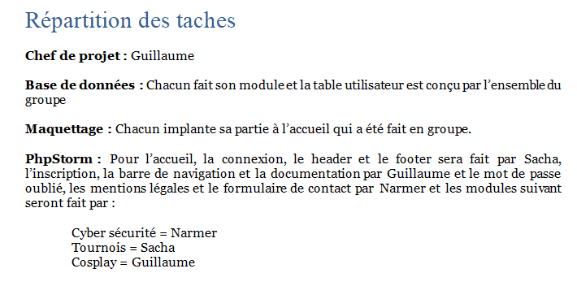
Mettre à disposition des utilisateurs un service informatique
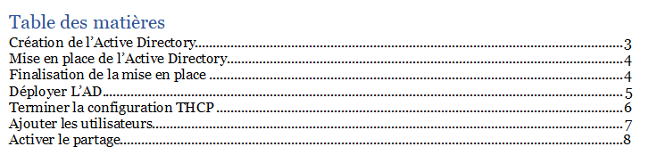
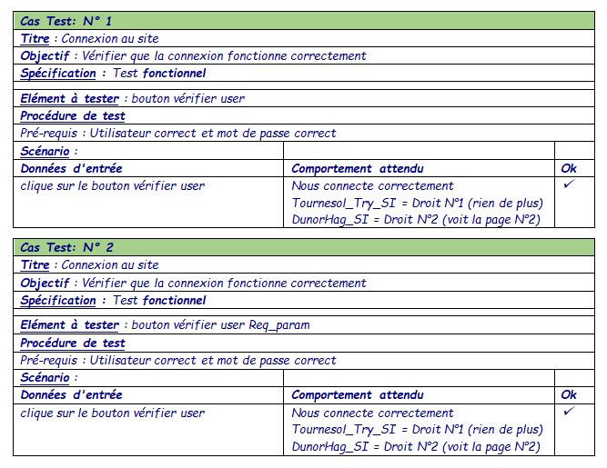
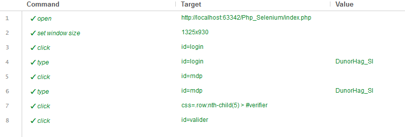
Organiser son développement professionnel
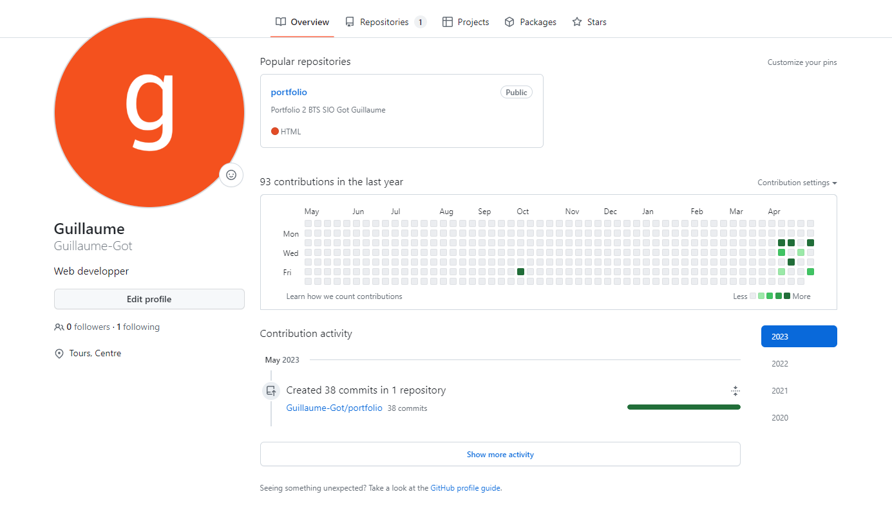
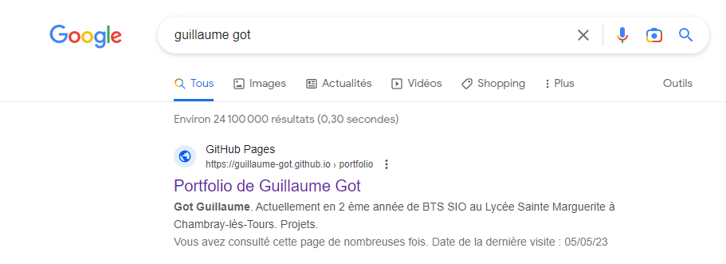
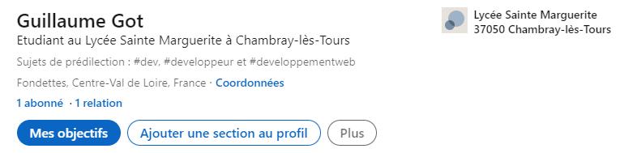
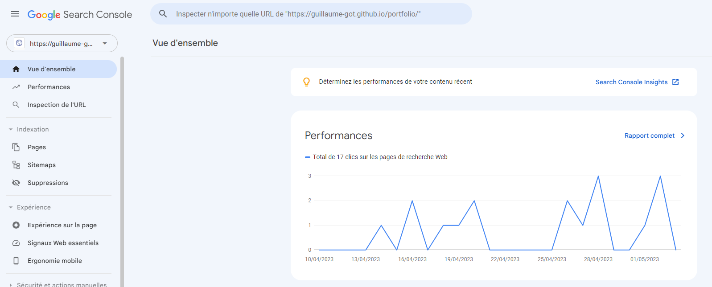